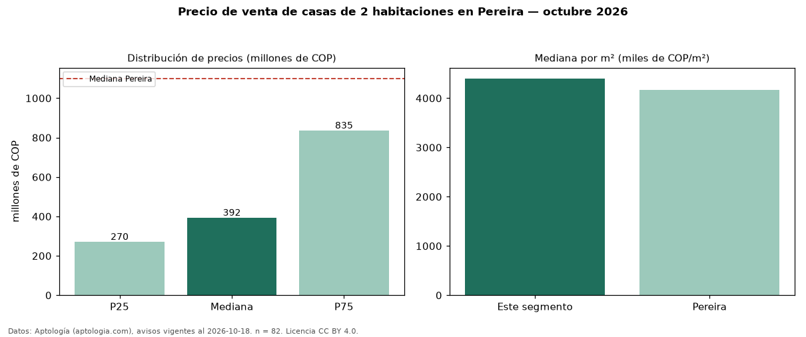

Precio de venta de casas de 2 habitaciones en Pereira — octubre 2026
Con 82 avisos vigentes, el precio mediano de casas de 2 habitaciones en venta en Pereira es COP 392 millones. Eso es 64 % por debajo de la mediana de todos los casas en venta de Pereira (COP 1,10 mil millones). Por metro cuadrado, la mediana es COP 4,40 millones/m² (n = 67 avisos con área). La mitad central de los avisos va de COP 270 millones a COP 835 millones (razón 3,1), una dispersión alta. El área mediana anunciada es 108 m². La administración mediana declarada es COP 290.000 al mes (n = 15). El estrato más frecuente es 3 (28 % de los avisos con estrato). 80 % de los avisos con el dato declara parqueadero o cochera. Datos: Aptología (aptologia.com), CC BY 4.0 — https://www.aptologia.com/venta/pereira. Archivos: PDF, CSV con las cifras y gráfica PNG.

| Avisos únicos | 82 |
|---|---|
| Percentil 25 | COP 270.000.000 |
| Mediana | COP 392.500.000 |
| Percentil 75 | COP 835.000.000 |
| Mediana por m² | COP 4.400.000 |
Fuente: avisos vigentes de portales inmobiliarios recopilados por Aptología, deduplicados (mínimo 30 avisos únicos por celda). Precios pedidos, no cerrados. Fecha: 2026-10-18.